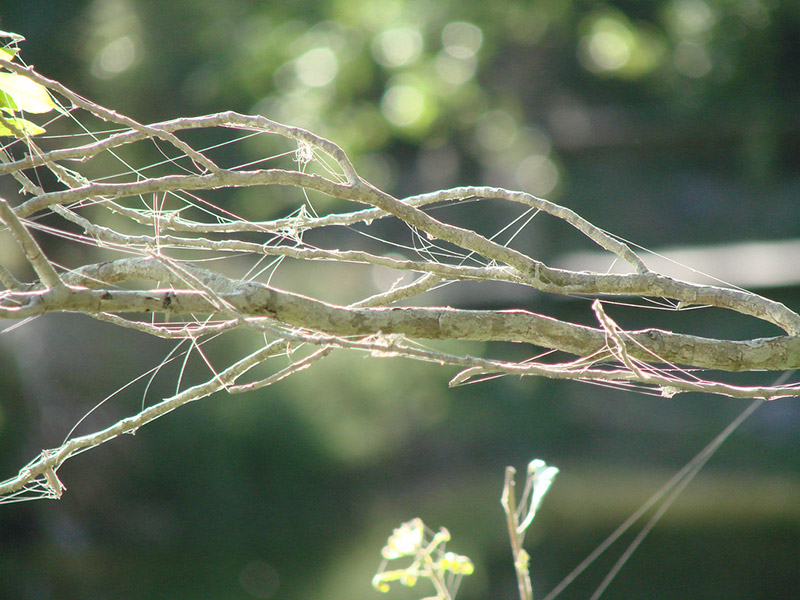

1) 32 часа охоты - 700 кг
Известно ли вам, каким был официальный мировой рекорд по времени борьбы с пойманной рыбой? Это событие состоялось еще в 1968 году у берегов Новой Зеландии. Некий Дональд Хитли на протяжении 32 часов участвовал в погоне за огромной рыбиной на своем двенадцати тонном рыболовном катере. Увы, свою добычу он так и не поймал, но все же выяснил, что гнался за шестиметровым черным марлином весом около 700 кг.
2) Осетр на 210 кило
А вот наиболее тяжелой рыбой из категории пресноводных по сведениям Международной ассоциации спортивного рыболовства оказался 210 килограммовый осетр, который был пойман знаменитым американским рыбаком Джоем Паллоттой у берегов Калифорнии.
3) Лопата вместо снастей
Как известно, главным отличительным признаком рыбака от остальных людей является его удочка. Однако далеко не во всех странах используются рыболовные снасти. К примеру, многие африканские жители ходят на рыбалку с лопатой. Это делается специально для охоты за протоптером. Во время засухи эта рыба зарывается глубоко в ил, который даже при высыхании помогает сохранить ей жизнь. Часто пойманную добычу вновь закапывают возле своего жилища для ее лучшей сохранности. Но здесь интересные факты о рыбалке только начинаются.
4) Бакланы в помощь рыбакам
Не менее хитроумными оказались жители Японии и Китая. Еще многие века назад азиаты отправлялись на рыбную ловлю, используя прирученных бакланов. На шею птице одевался специальный ошейник, который не давал ей заглатывать рыбу. Таким образом, довольный азиат мог сидеть в лодке и спокойно дожидаться, когда бакланы сами поднесут ему свою добычу.
5) Рыба-прилипала - добыча в качестве приманки
Как известно, часто в роли приманки многие рыбаки используют различную мелкую рыбешку. Но знаете ли вы, что у берегов Мозамбика и Мадагаскара такая приманка сама охотится за своей добычей? Местные рыбаки специально крепят на свои лески рыб-прилипал, которые плавают вдоль дна и при обнаружении черепахи тут же присасываются к ее панцирю. После этого рыбакам остается лишь поднять свою добычу из воды.
6) На удочку - 1208 кг
Примечательно, что самой крупной морской рыбой из всех когда-либо пойманных на удочк у обитателей морских глубин считается белая акула, которая известна тем, что часто нападает на неосторожных ныряльщиков. Эта опасная хищница была поймана еще в 1959 году вблизи живописных берегов Южной Австралии, а ее вес составил 1208 кг.
7) На гарпун - 2 тонны
А вот при помощи корабельного гарпуна была поймана еще большая акула! Причем ее вес составил более двух тонн, а длина – 6,5 метров. Пожалуй, трудно представить даже то, с каким неимоверным трудом удалось поднять ее на борт судна и выгрузить на берег.
8) Закинуть снасти на 176 метров
А известно ли вам о том, каким был рекорд по самому дальнему забросу снасти? Так, немец Вальтер Киммероу сумел забросить снасть весом в 30 гр на поразительных 176 метров! Но и это еще далеко не все интересные факты о рыбалке, о которых вам следует знать.
9) Дельфины помогают рыбакам
Как известно, дельфины являются одними из наиболее умных животных в природе. Но мало кто знает, что эти прекрасные обитатели морских глубин часто принимают участие в рыбной ловле и даже помогают рыбакам. Так, уже многие сотни лет подряд во многих южных городах Бразилии группы дельфинов специально гонят рыбные косяки к берегу.
Как раз в такие моменты рыбаки заходят на мелководье и готовят сети. Когда один из дельфинов в определенный момент подпрыгивает и переворачивается в воздухе, то это является условным сигналом рыбакам для забрасывания сетей. После этого испуганная рыба, избежавшая сети, плывет навстречу дельфинам, а те ее с легкостью ловят и поедают. Любопытно, что никто не обучал дельфинов такому поведению, а первые сведения о подобной совместной ловле встречаются еще в 1847 году.
10) Леска из паутины
Примечательно, что паутина является одним из наиболее прочных природных материалов. А в Южной Америке по своеобразным мостам из такой паутины между ущельями и деревьями с легкостью перебираются обезьяны. Заметили это и рыбаки из Новой Гвинеи, которые используют такую паутину в качестве рыболовных сетей. Правда, назвать такой материал долговечным все же нельзя. Как видите, интересные факты о рыбалке весьма разнообразны и познавательны, а сам мир рыболовной ловли намного обширнее и удивительное, чем вы могли бы себе представить!